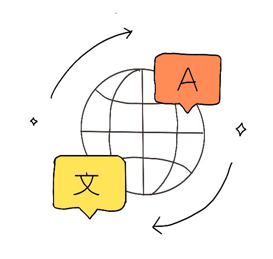
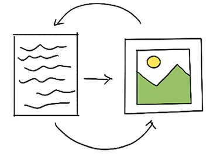
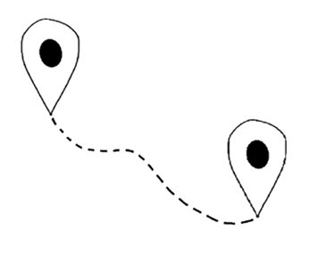
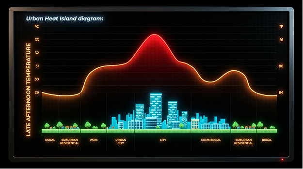
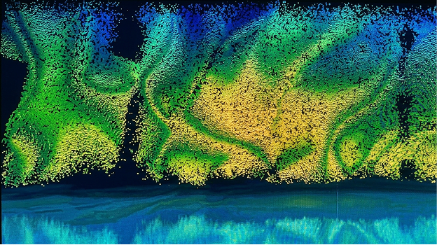
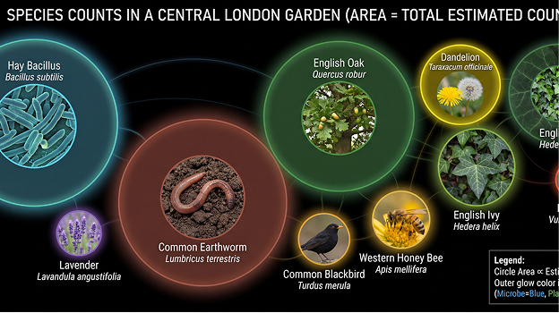

With a fully specified exhibit and a clear focus on the garden room, it was time to build.
Three Guiding Principles

Translation Access
Visual Storytelling
Intuitive NavigationThree principles guided everything we built: translation access (the exhibit needed to work for international visitors who might not read English), visual storytelling (data should be felt before it's explained), and intuitive navigation.
3D Modelling & AI Imagery
We divided the work by skill and interest. Sydney built the 3D model of the entire exhibit in Blender. To render the walls of each room, we worked as a team using Adobe Firefly to generate images that reflected the data visualizations we'd specified such as an eDNA species prevelance visualizations for the microbe room and an acoustic sound-wave artwork for the audio level room.
 3D Exhibit Model — Blender
3D Exhibit Model — Blender



Prototypes
For prototypes, Sydney programmed the model to be clickable and interactive. I then built the garden room prototypes by using Figma and then Gemini's Nano Banana image generator to place the interactions into the garden room landscape.
A Note on Vibe Coding
This stage pushed me to develop real strategies for AI image generation, thinking carefully about dimensions, output style, and data accuracy. Getting an AI to produce something that reads as a genuine data visualisation rather than a decorative mush requires very deliberate prompting. Speaking of AI as a creative tool: a quick meta note on this blog itself. Since our vibe coding session with Richard, I've been looking for more ways to practice this technique. I decided to vibe code this blog site rather than using Wix or a similar no-code platform, and that decision has given me a level of creative control I wouldn't have had otherwise, like in the hero section on the main page, where I was able to add in micro-interactions to illustrate different aspects of the project. It has felt like an extension of what we've discussed about AI throughout this course — using it not as a shortcut, but as a way to be creative beyond my own technical limitations.
Next up: the final presentation and what I learned from communicating our work.